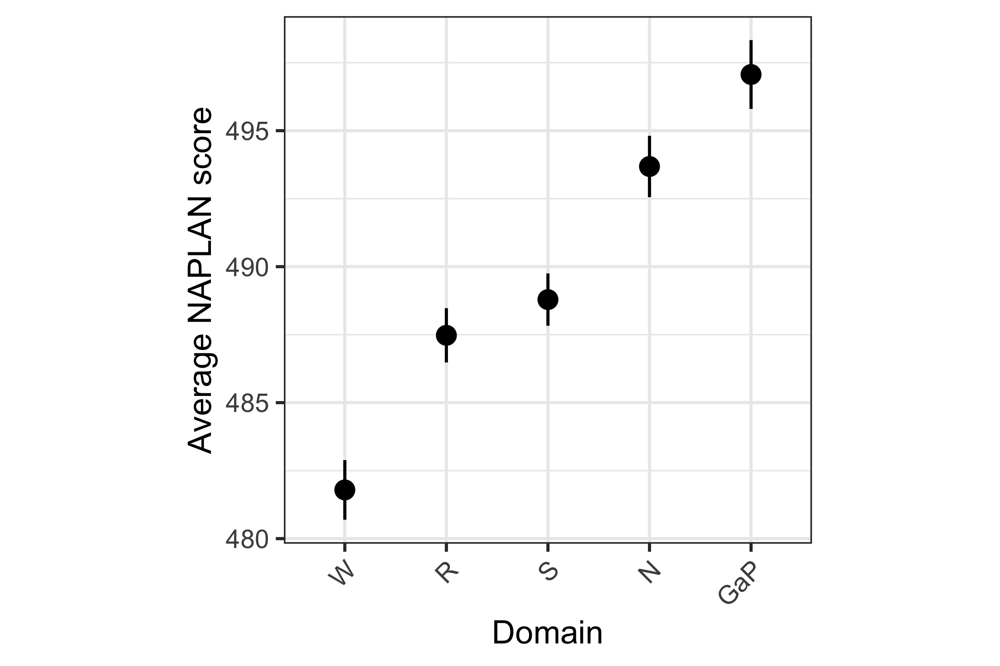
The Dangers of Averages
Every year, over a million Australian kids sit down to the same NAPLAN tests, and every year the national headlines report more or less the same story: scores are steady, nothing much has changed. But national averages have a way of flattening out the most important parts of a story. Dig into who is actually sitting behind those averages, and a very different picture emerges – one where an entire group of students is measurably and consistently being left behind. This post works through that data step by step: starting from the national numbers everyone sees, then preliminarily examining the data to pull apart who gets tested, who doesn’t, and what the gap actually looks like once you stop averaging it away.
Where Did the Data Come From?
NAPLAN tests Australian enrolled Year 3, 5, 7, and 9 students, though some are exempt (disability, recent arrival) or absent, so participation isn’t 100%. Observations are aggregated statistics (mean, SD, CI, proficiency-band %) by year, domain, state, and subgroup, not individual student records. Variables cover performance, participation, and demographics. “NAPLAN Results” (sheet 3) is the key analysis sheet. Anonymisation relies on aggregation; flags suppress cells with under 30 assessed students (n.p.) or for policy reasons (s.p.) – the latter resulted in Tasmania’s omission, due to low participation.
How Do the Scores Look?
For the sake of matching variables and observing educational effects, this report will only follow the performance of the 2026 Year 5 cohort. Before we dive too deeply, let us first establish a baseline of average performance across NAPLAN tests for these students. For readability, we will abbreviate the names of the domains: Writing (W), Reading (R), Spelling (S), Numeracy (N), and Grammar and Punctuation (GaP).
Figure 1 shows that when aggregated nationally, there is not particularly significant difference in the average scoring across each of the domains assessed in NAPLAN, with a range of only 15 points between all domains. Grammar and Punctuation holds the highest average score (though also appears to be the most variable), while Writing holds the lowest average score.
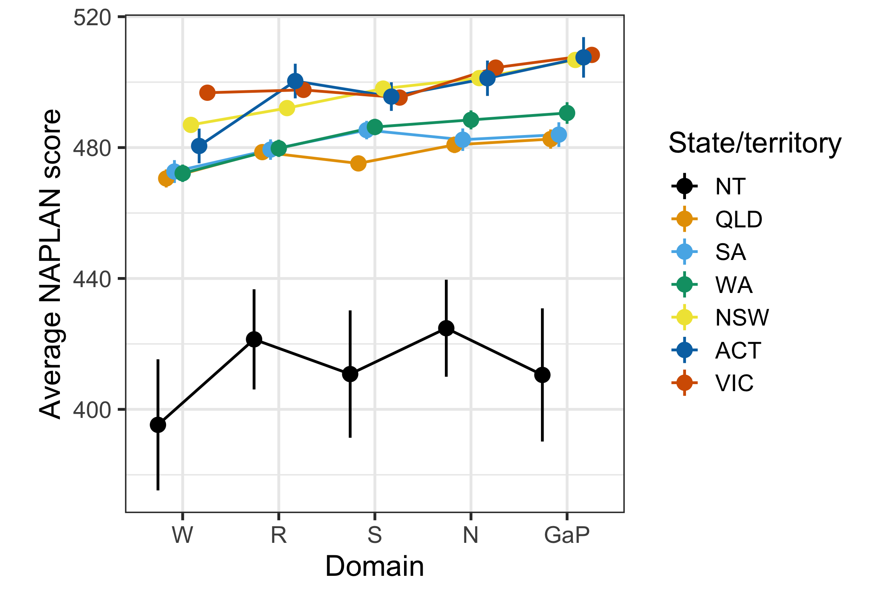
Figure 2 shows the performance of each state across domains. Viewing this on a single plot exposes that Northern Territory trails the rest of the states/territories by a wide margin across every domain. While the remaining states cluster fairly closely together, with rank order shifting slightly between domains. Additionally, NT is shown to have the largest confidence intervals, suggesting a greater range in their scores and the possibility of an even lower “true” average.
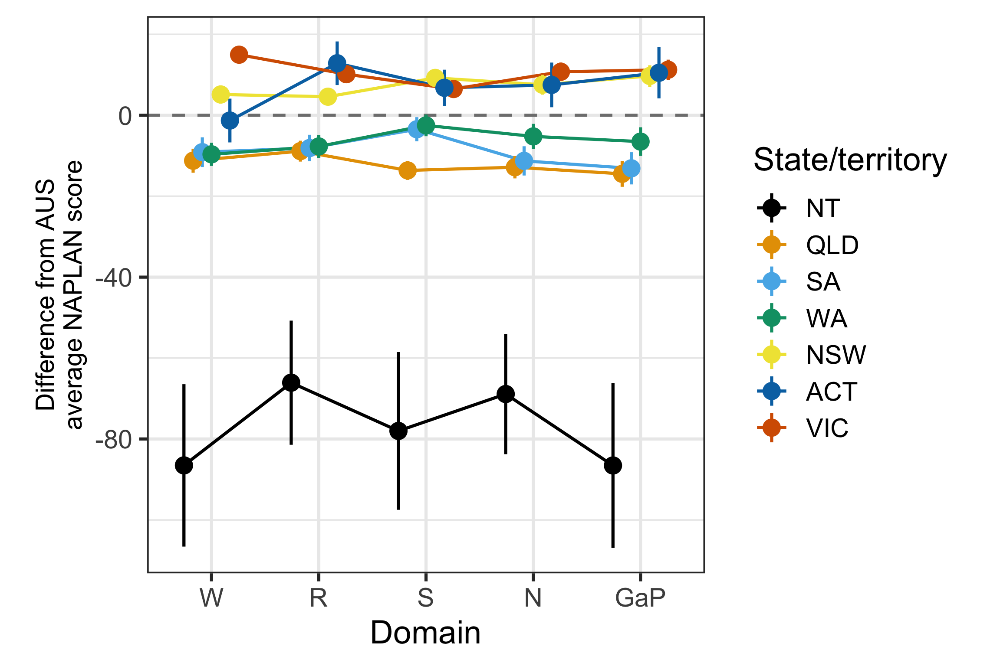
Figure 3 re-centres Figure 2 on the national average, which makes clearer that NT sits roughly 70-85 points below the national average across every domain – an order of magnitude larger than the spread among the remaining states/territories (all within about ±10 points of the national average). Note that the error bars combine each state’s and AUS’s confidence intervals in quadrature, assuming independence. But the two are not strictly independent since the AUS aggregate is computed by pooling all states, including the one being compared; this likely makes the error bars somewhat conservative (wider than the true uncertainty).
Cumulatively, these figures suggest that there is some disparity in performance between the Northern Territory and other states. Let us dive deeper into what might be driving this…
Who is Doing the Tests?
Now, we know the average scores aren’t consistent across all states. But could there be other factors skewing our picture of performance?
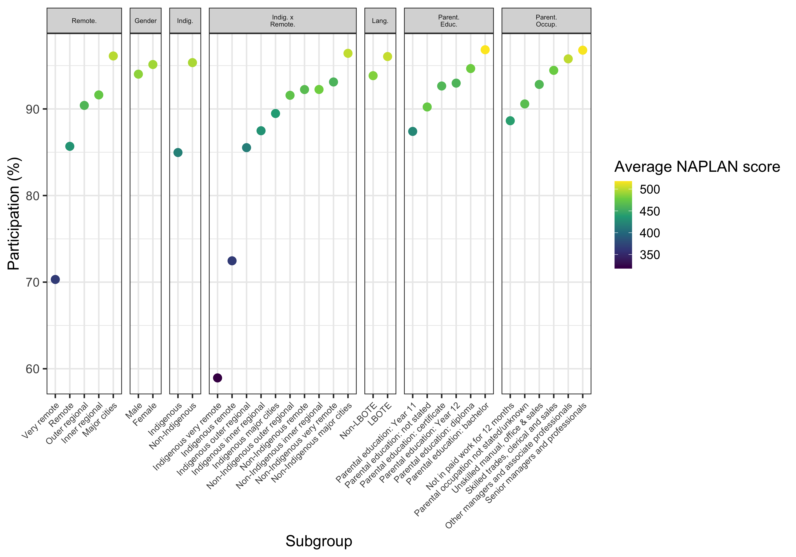
Figure 4 depicts test participation across different demographic subgroups. The lowest-participation subgroups across the whole dataset are concentrated in remoteness, Indigeneity and their intersection. While other demographic splits (gender, language background, parental education/occupation) stay within a, relatively, much narrower, higher-participation range. As such, the remainder of this section drills into Indigeneity by ABS remoteness.
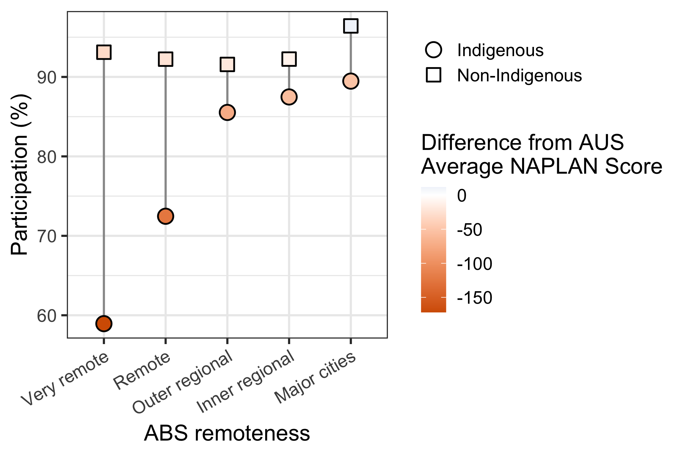
Figure 5 zooms in on the relationship between Indigeneity, remoteness, participation rates and deviation from national overall average NAPLAN scores. This simultaneously highlights the positive relationship between participation and impact on score (likely suggesting that areas with greater access to testing are also more likely to have greater educational resources), and the negative relationship between remoteness and participation. This also exposes the major gaps in participation rates between Indigenous and Non-Indigenous students, particularly in more remote areas. But, perhaps most importantly, this highlights our most vulnerable and lowest-performing test-takers: the Very remote Indigenous students.
It is interesting to note that this gap shrinks with lesser remoteness (though the reason for this will be explained with the next figure).
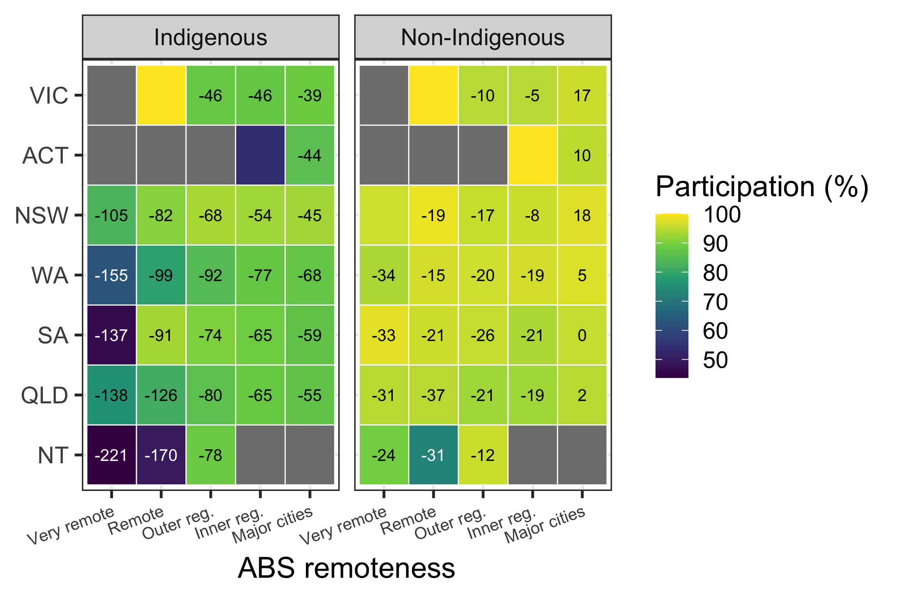
And with Figure 6, we arrive at a clearer picture of who is performing how, and where. As expected from Figure 5, students who are Indigenous and Very remote consistently exhibit the weakest performance in their cohort. Adding this back to the state differences explored back in Figure 3, we see that Very remote, Indigenous students in NT are disproportionately disadvantaged, among the least likely to complete NAPLAN, and likely to receive the lowest score on average.
Answering the shrinking participation gap question raised by Figure 5, NT only contains observations that are “outer regional” or more remote, while also containing the lowest participation rates among Indigenous students. This would be massively down-weighting the estimate. Simultaneously, NT’s absence from the more urban subgroups may be part of why these areas report lesser difference in participation, irrespective of Indigeneity.
It should also be noted that, while being suppressed from displaying score performance – remote Victoria (irrespective of Indigeneity) and inner-regional ACT (specifically non-Indigenous) report perfect participation rates. This stands out from the surrounding data and may be worth investigating for entry validity.
Are We All Learning as We Grow?
Now let’s take a look at how our cohort has grown since we last saw them sit NAPLAN in Year 3, back in 2024.
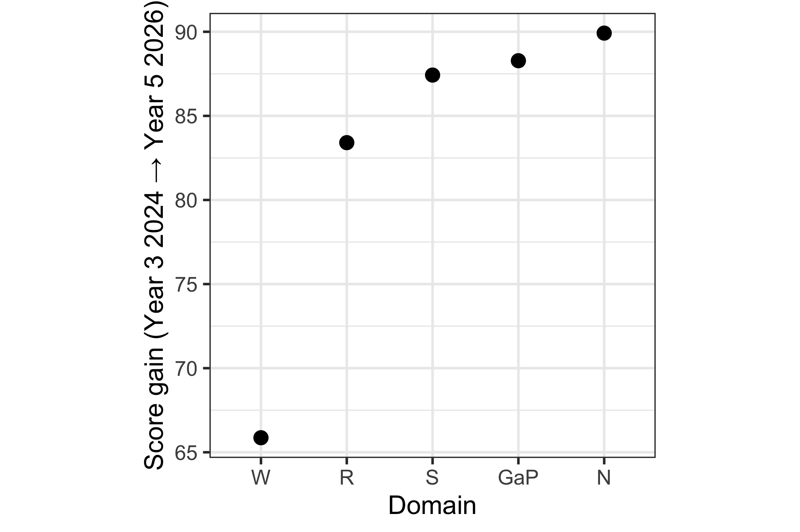
Figure 7 shows the aggregate national average growth in student scores between Year 3 and Year 5. From this, we learn that Writing not only is the lowest-scoring domain (as seen in Figure 1) but also the lowest-growth (~66 points). The other four domains exhibit comparably clustered growth between the two test attempts (~83-90 points).
But does this hold up everywhere and for all types of students?
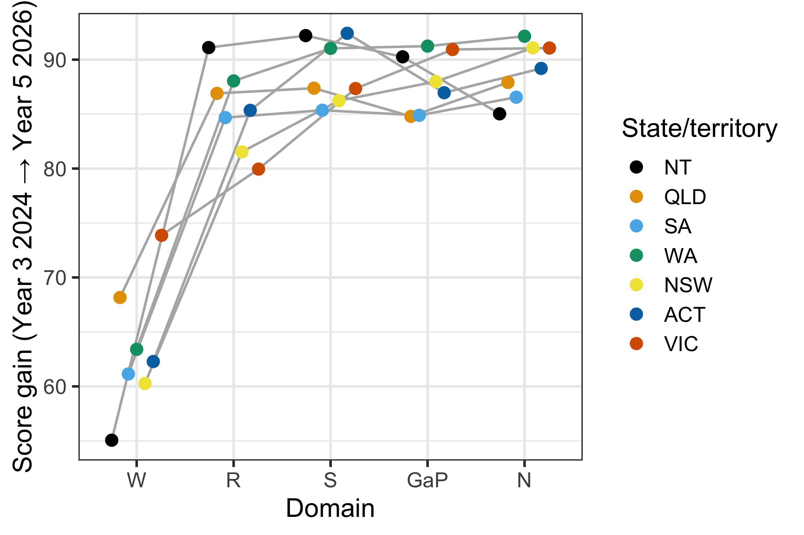
Figure 8 shows that Writing remains the weakest growth area across all states, maintaining the clustered shape for the other four domains. Notably, however, NT trumps other states for growth in Reading and Spelling scores. Though, given the scores remain relatively low post-growth, this is realistically just weak convergence to mean performance.
Shifting our focus back to subgroups – how do Indigenous students fare at the state level?
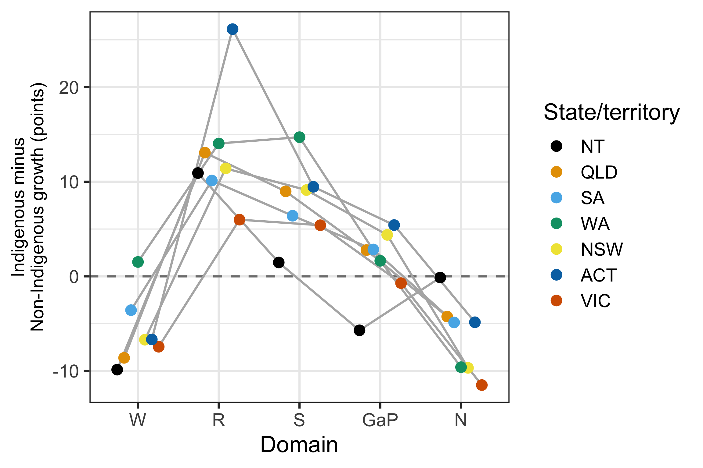
Breaking things down by Indigeneity and state, Figure 9 shows that Reading and Spelling growth consistently favours Indigenous students across almost every state, while Writing and Numeracy consistently favour Non-Indigenous students. This is the same domain pattern seen nationally in Figure 7. NT stands out as the state where this gap is smallest and most inconsistent, sitting closest to zero in most domains, while ACT shows the largest single gap (Reading, +26 points).
In a vacuum (like for NT in Figure 8) this would paint an optimistic picture for Indigenous students. However, even with these growths, the earlier figures show that the cohort’s overall performance continues to lag well behind the national average.
So what does this all mean?
Unmasking the Inequity
Well, let’s revisit the plot from which this journey began, but now disaggregating scores by Indigeneity.
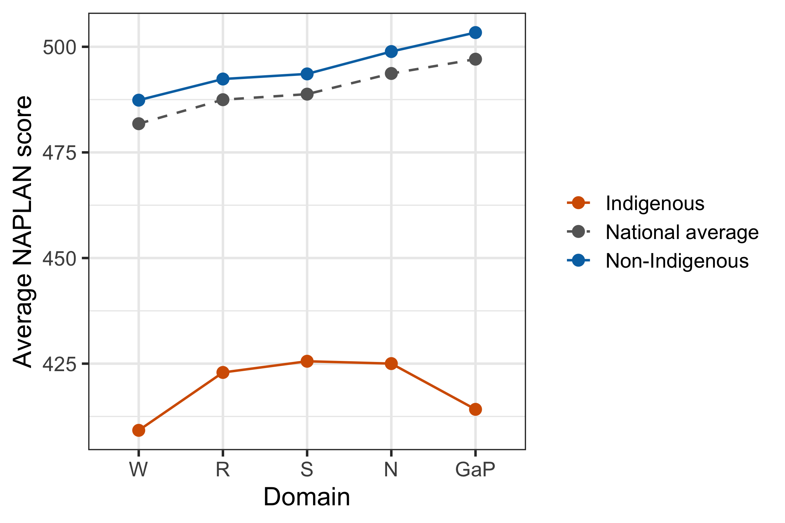
As feared, Figure 10 reveals that the national average scores are actually masking Indigenous Australian performance; they only really paint a picture of the non-Indigenous students. This leaves a very vulnerable minority who is poorly represented in educational efforts and whose success is quite possibly being let down by the system.
And this is all, so far, just looking at aggregates and averages. How does this hold up at the performance band distribution level?
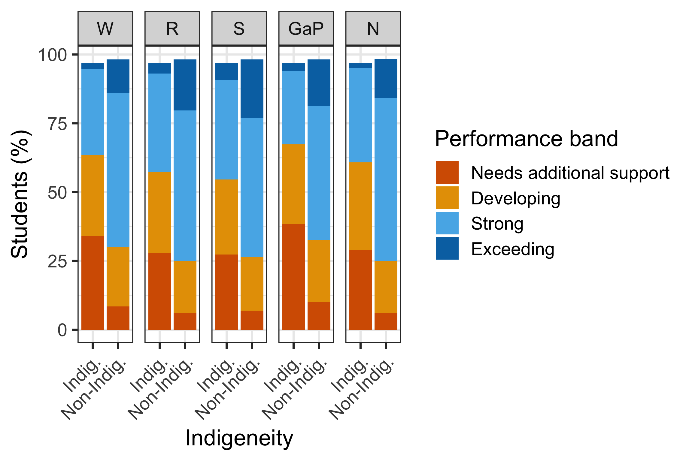
Figure 11 confirms the gap seen in Figure 10 is not just a shift in the average, but a genuine redistribution across the whole performance spectrum. In every domain, Indigenous students are far more concentrated in “Needs additional support” (roughly 3-4 times the share of Non-Indigenous students) and far less represented in “Exceeding” (often less than a fifth the share). This is most pronounced in Grammar and Punctuation, where “Needs additional support” accounts for over 40% of Indigenous students, compared to under 10% of Non-Indigenous students.
Filtering this down even further, to our most vulnerable remote and Indigenous students, the story becomes even starker.
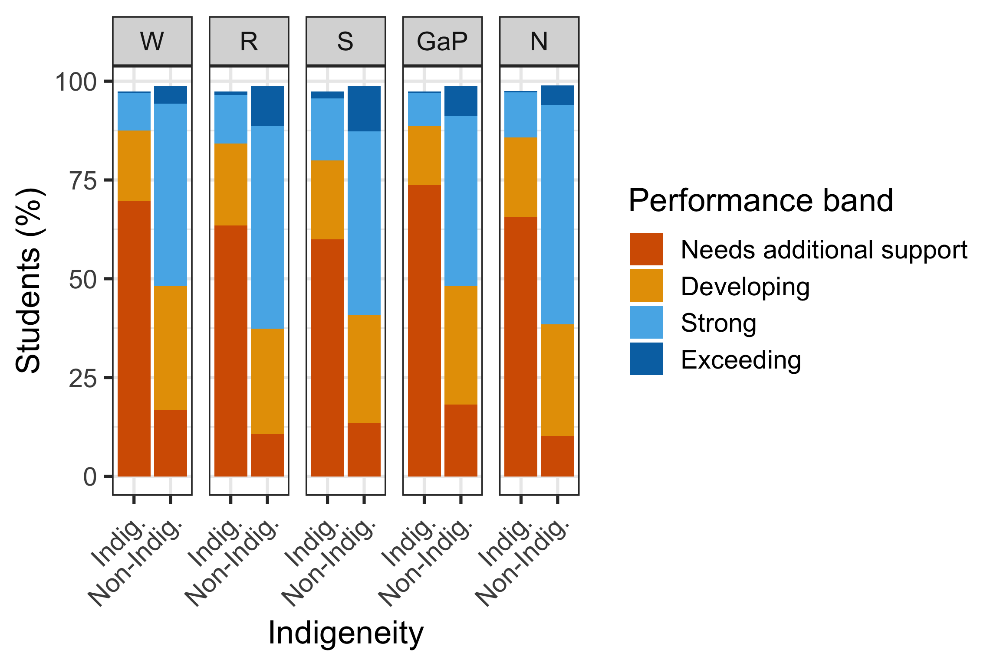
Figure 12 shows the disparity amplifies sharply in remote areas: across Remote and Very remote areas combined, 60-74% of Indigenous students fall into “Needs additional support” depending on domain, compared to roughly 10-19% of Non-Indigenous students in the same areas, and “Exceeding” is almost entirely absent for Indigenous students (under 1% in every domain).
The performance band’s name is fitting: these kids need additional support. We cannot keep ignoring this disparity. We cannot continue to leave our Indigenous youth behind.
Resources
The materials used for this report are:
Data
Australian Curriculum, Assessment and Reporting Authority (ACARA) (2026). NAPLAN National Results. National Assessment Program (NAP) data portal. Accessed via https://www.acara.edu.au/reporting/national-report-on-schooling-in-australia/naplan-national-results.
R packages
Wickham H, Averick M, Bryan J, Chang W, McGowan LD, François R, Grolemund G, Hayes A, Henry L, Hester J, Kuhn M, Pedersen TL, Miller E, Bache SM, Müller K, Ooms J, Robinson D, Seidel DP, Spinu V, Takahashi K, Vaughan D, Wilke C, Woo K, Yutani H (2019). “Welcome to the tidyverse.” Journal of Open Source Software, 4(43), 1686. doi:10.21105/joss.01686.
Wickham H (2023). conflicted: An Alternative Conflict Resolution Strategy. R package version 1.2.0. doi:10.32614/CRAN.package.conflicted.
Wickham H, Bryan J (2026). readxl: Read Excel Files. R package version 1.5.0. doi:10.32614/CRAN.package.readxl.
Wickham H (2016). ggplot2: Elegant Graphics for Data Analysis. Springer-Verlag New York. https://ggplot2.tidyverse.org.
Müller K (2025). here: A Simpler Way to Find Your Files. R package version 1.0.2. doi:10.32614/CRAN.package.here.